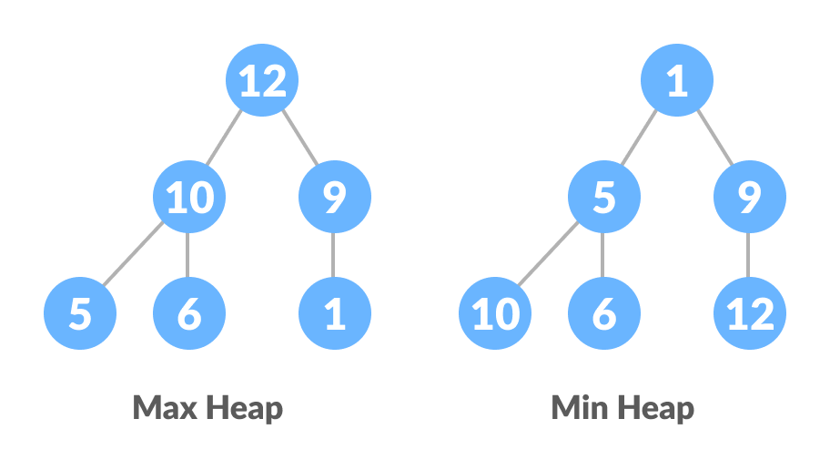

A Thorough Description and Comparision of Merge Sort, Quicksort and Heap Sort
Pranav Krishnan
Allen High School
Advanced Computer Science III
Mr. Ben-Yaakov
August 30, 2023
Merge Sort
Merge Sort is a divide-and-conquer algorithm that divides into multiple sub-arrays continuously and the sub-arrays are combined to form a final array. Using the Divide and conquer technique the algorithm divides a problem into subproblems recursively and once each subproblem is ready it combines the answers to solve the main problem. For example, if we had to sort an array (Numbers). A sub-problem would be where we sort a smaller section of this array starting at index I and ending at index r, this could be denoted by Array[i..r]. So the first part is to Divide: Create duplicate copies of sub-arrays of the original array then Conquer so we sort the sub-arrays, if we haven't reached the base case we divide the sub-arrays again and try to sort them. Then once we reach the base case we combine the sorted sub-arrays. Below is an example from Proramiz that visualizes Merge Sort in a nice way.
It has a time complexity of O(n log n) and a space complexity of O(n).
Quicksort
Quicksort is another divide-and-conquer sorting algorithm that selects a pivot element from an array and arranges elements smaller than the pivot on the left and larger elements on the right. This process continues over and over recursively until subarrays with single elements are obtained, resulting in a sorted array. The pivot selection can change usually being the element on the far right often. The algorithm then rearranges the array by comparing elements to the pivot and placing them in the correct position, and this process is repeated until elements are sorted within subarrays. The algorithm's steps involve selecting a pivot, rearranging the array, dividing subarrays recursively, and using a partition function for element swapping. Below is another diagram from Proramiz that visualizes Quick Sort in a neat way.
Quicksort's time complexity is best & average case O(nlog n) and worst-case O(n^2) with space complexity of O(log n)
Heap Sort
Heap Sort is a ubiquitous and efficient sorting algorithm that uses arrays and trees. The algorithm begins with an unsorted array and converts it into a sorted array using a binary tree structure called a heap (pictured below). The binary tree allows for relationships between array indexes and tree elements, which are necessary to run the algorithm. The algorithm tries to "heapify" the tree, turning it into a max-heap where each parent value is larger than its child value. you can view a nice diagram of a max vs min heap below. This involves repeatedly comparing and swapping elements to ensure the max-heap property. The algorithm builds the max-heap from the bottom up, then swaps the root element with the last element and performs heapify to sort the array. It is used in real life with embedded systems and security-focused systems. Below is the comparison between the max and min heap aswell as a visual representation of the heap sort algorithm by programiz.

Heap Sort's time complexity is O(n*log n) for all cases, with a space complexity of O(1).
Merge Sort is known for its reliable and consistent performance, as it maintains a stable time complexity of O(n log n). On the other hand, Quicksort, while faster on average, has the potential to encounter situations where its time complexity significantly slows because of its worst-case scenario. This worst-case in Quicksort's performance can stem from its use of the pivot selection strategy. Contrarily, Heapsort, though usually slower than both Merge Sort and Quicksort in practical applications due to some constant factors, provides a consistent O(n log n) time complexity regardless of data distribution. This makes Heapsort a great option in scenarios where reliability and predictability in sorting performance are important.
Space Complexity Comparison
Merge Sort and Heapsort exhibit differing space complexities, with Merge Sort having O(n) space and Heapsort operating with a space efficiency of O(1), making them better choices for managing memory when sorting large datasets. Merge Sort's space complexity corresponds to its need for auxiliary memory during the merging phase when temporary arrays are used to merge sorted subarrays as efficiently as possible. On the contrary, Heapsort's consistent O(1) space usage stems from its use of heaps, enabling the algorithm to perform sorting operations without needing extra memory allocation. With Quicksort, its space complexity shows an intricate relationship with its recursive structure. Although Quicksort's space usage is normally listed as O(log n) due to the logarithmic depth of the recursive stack, it's crucial to recognize the nuances that can affect this assessment. Variations in pivot selection strategies, optimization techniques, and specific implementations can lead to changes in space complexity. Thus, Quicksort's memory usage exhibits a fluid nature, caused by algorithmic decisions and the specific code. This dynamic space characteristic shows Quicksort's adaptability to different scenarios, this means you should also consider that this could be at the cost of a potentially higher memory demand under specific circumstances.